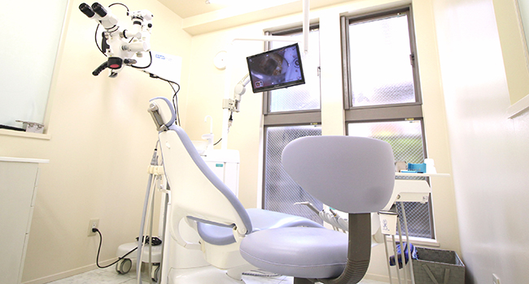
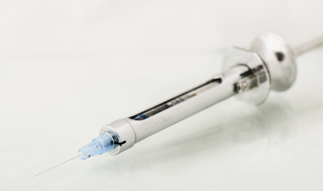
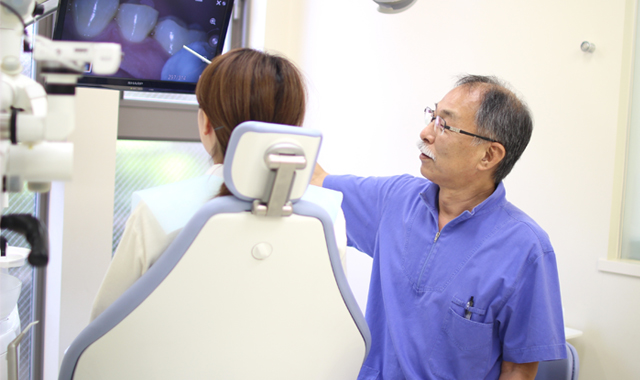
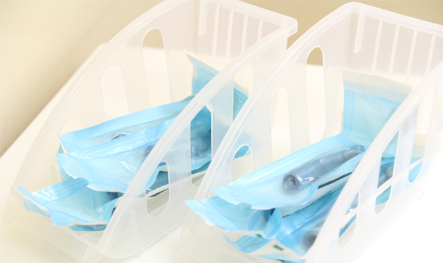
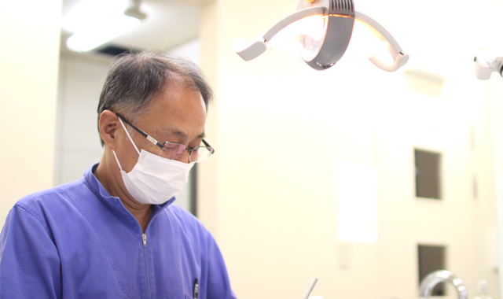
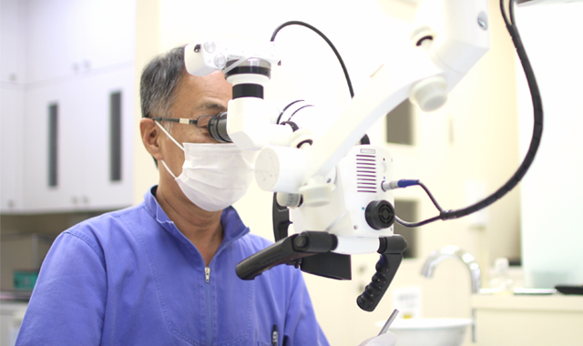

中村歯科医院のコンセプト・スタッフ紹介

千歳船橋駅から徒歩3分の「中村歯科医院」は、患者様のことを第一に考えた歯科医師や歯科衛生士が勤務しているため、小さなお子さんからご高齢の方まで通いやすい歯科医院です。ここでは当院の診療コンセプトや、患者様と向き合う院長、勤続年数の長いベテランのスタッフについてご紹介しています。
中村歯科医院の診療コンセプト
カウンセリング時間の確保
患者様と話し合い、十分に理解したうえで治療に入ります
千歳船橋の中村歯科医院では、患者様一人ひとりと真剣に向き合い、十分にお話をしたうえでご納得されてからでなければ治療を始めません。それは、口腔内の状態や歯の悩み、コンプレックスなど、患者様のことをしっかりと理解し、最適な歯科治療を行うためです。デリケートなお話をする際には、パーティションで仕切られた診療室でカウンセリングを行うなど、最大限プライバシーに配慮いたします。
痛みの少ない治療

負担を減らし、できるだけ痛みを感じない治療を心がけています
過去に歯科治療でつらい経験をしたという方や、治療の痛みに耐えられないという方もご安心ください。当院では麻酔の際に細い注射針を使用するなど、なるべく痛みの少ない歯科治療を行っています。また、東洋医学療法などを取り入れた、患者様のお体になるべく負担をかけない治療を行います。
丁寧で納得の説明

治療法に不安のある方には、ご納得されるまでお話します
当院では、治療方法やメリット、治療後に注意すべき点などをわかりやすく説明する、インフォームドコンセントを重視しています。少しでもご不安な点があれば、何度でもご質問ください。勝手に治療を進めることは絶対にいたしません。必ず患者様にご理解いただいたうえで治療に入りますのでご安心ください。
滅菌・消毒の徹底

院内感染の防止のために滅菌・消毒を徹底
院内感染を防止するために、施設内の消毒・滅菌を徹底しています。ご来院された患者様が安心して治療に集中できるよう、安心と安全をお約束いたします。
担当医師・歯科衛生士制

患者様のちょっとした変化にも気付きます
当院では担当医師・歯科衛生士制を導入しており、担当者が患者様一人ひとりと向き合い、治療を行ってまいります。しっかりとコミュニケーションを取ることで患者様の不安を解消。治療のたびに変化する患者様の口腔内の状態にも柔軟に対応するなど、最初から最後まで一貫して携わることにより、安心で確実性の高い治療をお届します。
審美歯科・根管治療

根管治療や審美歯科治療などさまざまな治療法に対応
当院ではできるだけ歯を削らず、抜くことのない治療方針により、歯を残すための根管治療に対応。また、美しい歯にこだわる審美歯科治療により、普段から健康意識を高められます。精密治療として、歯を失っても咬む喜びを得られるインプラント治療にも対応。さまざまな治療法をご提案しますので、一度当院へご相談ください。
スタッフ紹介
| 医院長 | |
|---|---|
| 略歴 | 昭和57年 松本歯科大学卒 昭和60年 経堂1丁目に中村歯科医院 設立（歯科・小児歯科） 平成3年 医療法人社団矯仁会 設立理事長就任 平成19年 現在地にて設立 |
| 所属団体 |
|